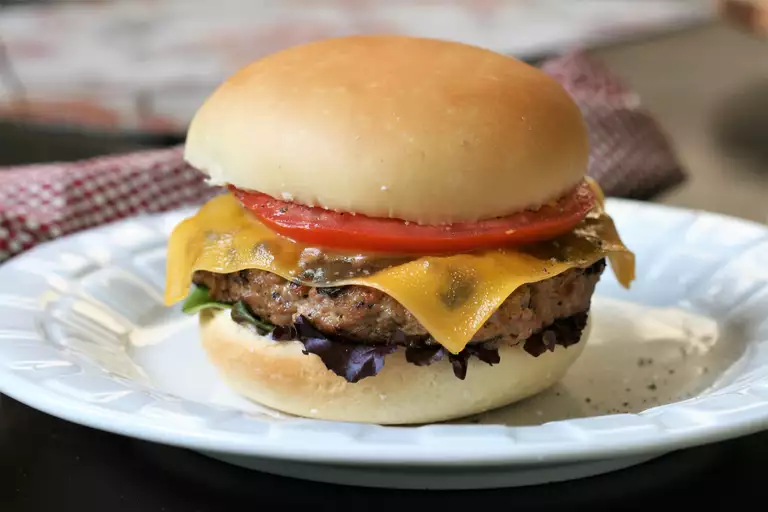

Garlic and Ranch Turkey Burgers

Garlic and ranch-flavored turkey burgers are a quick and delicious recipe for families on the go.
Ingrediants
- 1 pound ground turkey
- 1 (1 ounce) package ranch dressing mix
- 1 egg
- 3 cloves garlic, minced
- ¼ cup Worcestershire sauce
- seasoned salt and pepper to taste
- Preheat an outdoor grill for medium-high heat, and lightly oil the grate.
- Knead together turkey, ranch mix, egg, garlic, Worcestershire sauce, seasoned salt, and pepper in a bowl until evenly combined; divide into 4 equal portions and form into patties.
- Cook on the preheated grill about 5 minutes per side for well done. An instant-read thermometer inserted into the center should read 165 degrees F (74 degrees C).